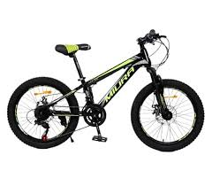
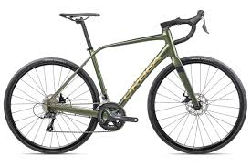
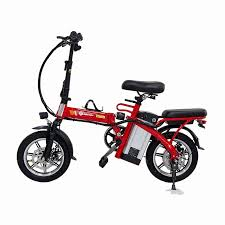

Tipos de Bicicletas
Explora los diferentes tipos de bicicletas que te sean utliles para un mayor alcance y resistencia.
Bicicleta Montañera
Ideales para terrenos montañosos y caminos irregulares. Tienen llantas gruesas y suspensión para mayor comodidad.
Bicicleta de Carretera
Diseñadas para velocidad en pavimento. Son ligeras y con neumáticos finos.
Bicicleta Eléctrica
Incorporan un motor eléctrico para asistencia en pedaleo, perfecta para desplazamientos largos sin esfuerzo.
